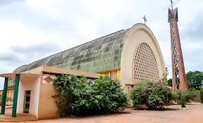

La guinguette de Nasso

La Chatédrale notre Dame de Lourdes
Le Mausolée Guimbi Ouattara

Le grand marché de BOBO-DIOULASSA

La mare aux hyppopotames

Les silures sacrés de Dafra

Le village de Koro

La place Tiéfo Amoro

Le Mausolée Tiéfo Amoro

Le Musée Communal Sogossira Sanou